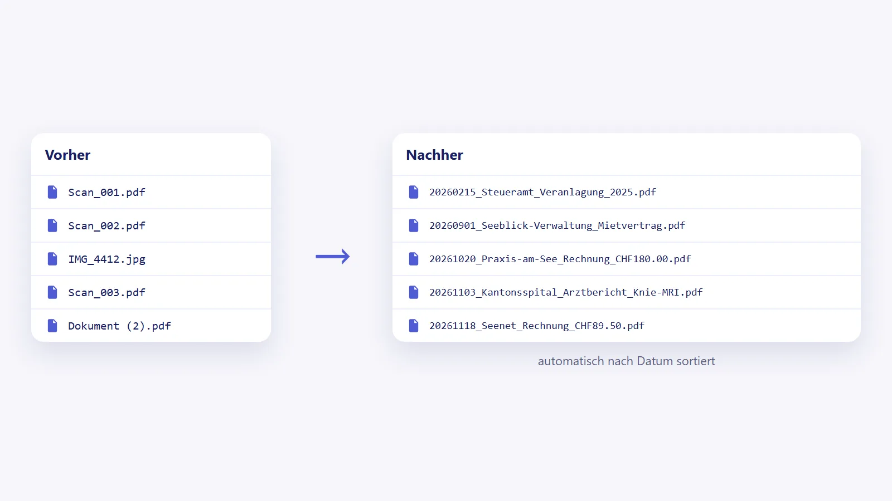

Dokumente richtig benennen: das Dateinamen-Schema, das hält
Aktualisiert am 18. November 2026 · Silvan, Gründer von TidyScan · 6 Min. Lesezeit
Ein Ordner voller Dateien namens Scan_001.pdf, Scan_002.pdf und IMG_4412.jpg ist keine Ablage, sondern ein Stapel. Der Unterschied zwischen beidem ist der Dateiname. Wer Dokumente richtig benennen will, braucht ein festes Schema: Dann findest du jedes Dokument über die Suche, siehst es richtig sortiert und brauchst weniger Ordner. Hier steht ein Schema, das für Rechnungen, Verträge, Arztberichte und Steuerunterlagen gleich gut funktioniert, und wie du Dokumente automatisch benennen lässt, statt jeden Namen von Hand zu tippen.
Das Schema: Datum_Absender_Art_Thema
JJJJMMTT_Absender_Art_Thema.pdf
| Teil | Beispiel | Warum |
|---|---|---|
| Datum | 20261118 | Sortiert automatisch richtig, auf jedem System |
| Absender | Swisscom | Alle Dokumente eines Absenders mit einer Suche |
| Art | Rechnung | Was es ist, ohne die Datei zu öffnen |
| Thema (optional) | Knie-MRI | Unterscheidet zwei Dokumente vom selben Tag und Absender |
Beispiele:
20261118_Swisscom_Rechnung_CHF89.50.pdf20261103_Kantonsspital-Uznach_Arztbericht_Knie-MRI.pdf20260215_Steueramt_Veranlagung_2025.pdf20260901_Vermieter_Mietvertrag_Wohnung.pdf

Dokumente richtig benennen: 7 Regeln, damit das Schema hält
- Datum immer als JJJJMMTT.
18.11.2026sortiert falsch,20261118richtig. Bindestriche (2026-11-18) gehen auch, sind aber länger. - Welches Datum? Das Datum auf dem Dokument, nicht das Scan-Datum. Bei Rechnungen das Rechnungsdatum.
- Unterstrich zwischen den Teilen, Bindestrich innerhalb.
Kantonsspital-Uznachbleibt so ein Teil. - Keine Leerzeichen. Sie stören in Links und in manchen Programmen.
- Keine Sonderzeichen, die Windows in Dateinamen verbietet:
\ / : * ? " < > |. - Absender kurz und immer gleich.
Swisscom, nicht einmalSwisscom-AGund einmalswisscom. Sonst findet die Suche nur die Hälfte. - Feste Liste für die Art. Rechnung, Mahnung, Gutschrift, Offerte, Quittung, Vertrag, Police, Lohnabrechnung, Kontoauszug, Steuer. Zehn Begriffe reichen für fast alles.
Umlaute? Moderne Systeme kommen damit klar. Wer Dateien mit älteren Programmen oder über verschiedene Betriebssysteme austauscht, schreibt ae, oe, ue.
Bei Rechnungen den Betrag ans Ende: …_CHF89.50. So siehst du schon in der Dateiliste, was eine Rechnung kostet.
Von Hand oder automatisch benennen?
Von Hand dauert ein Name etwa eine halbe Minute: Datum suchen, Absender abschreiben, Art überlegen. Bei zehn Dokumenten pro Monat ist das machbar. Das Problem ist nicht die Zeit, sondern die Disziplin: Nach drei Monaten heisst die erste Datei wieder Scan_001.pdf.
Automatisch benennen heisst: Eine App liest das Dokument und schlägt den Namen vor. So macht es TidyScan:
- Offline auf dem Handy: Die Texterkennung liest die erste Seite. Regeln finden das Datum, den Absender (bekannte Firmen, Firmenzeilen wie «Muster AG», Webadressen) und die Art.
- Mit KI (optional): Nach deiner Zustimmung schlägt die KI zusätzlich ein Thema vor und erkennt auch unbekannte Absender.
- Schweizer QR-Rechnung: Zahlungsempfänger und Betrag kommen direkt aus dem QR-Code (siehe QR-Rechnung scannen).
- Lernt aus Korrekturen: Schreibst du einen Absender einmal um, übernimmt die App deine Schreibweise beim nächsten Mal.
Den Namen siehst du vor dem Speichern und kannst ihn ändern, oder du schaltest die Bestätigung ab und lässt die App ablegen. Wer seine Dateien sinnvoll benennen will, ohne jedes Mal nachzudenken, spart damit am meisten Zeit.
TidyScan erscheint in Kürze bei Google Play.
Bonus: Angaben im PDF selbst
Der Dateiname ist nicht der einzige Ort für Angaben. Ein PDF hat eigene Felder für Titel, Autor und Stichworte, die viele Programme bei der Suche berücksichtigen. TidyScan füllt sie aus dem Dateinamen: Autor = Absender, Stichworte = Art, Thema und Ordner.
Wie ich meine Dokumente heute benenne
Früher habe ich Dateien völlig unstrukturiert benannt. Danach kam das Datum nach vorne, im Format JJJJMMTT_Beispieldatei. Das war besser, kostete aber bei jedem Dokument Zeit und Überlegung.
Seit ich TidyScan entwickelt habe, nutze ich die automatische Texterkennung und passe meistens nichts mehr an. Kein Überlegen, alles automatisch sortiert. Für Benennen und Ablegen spare ich so pro Rechnung oder Dokument sicher eine Minute.
Fazit: Dokumente richtig benennen heisst, einmal entscheiden
Ein gutes Schema entscheidest du einmal und wendest es dann ohne Nachdenken an: Datum, Absender, Art, bei Bedarf ein Thema. Damit werden Ordner kleiner, die Suche zuverlässiger und die Sortierung automatisch. Welche Ordner dazu passen, steht im Ratgeber Ordnerstruktur mit Vorlage, und wie sich TidyScan vom Gratis-Scanner in Google Drive unterscheidet, im Vergleich. Alle Funktionen von TidyScan stehen auf der Startseite.
Häufige Fragen
Warum nicht einfach Ordner pro Jahr?
Weil das Jahr schon im Dateinamen steht. Ordner nach Thema plus Datum im Namen ergibt beides: das Thema über den Ordner, die Zeit über die Sortierung.
Soll ich alte Dateien umbenennen?
Fang nicht mit dem Altbestand an. Benenne ab heute alles Neue richtig und alte Dateien nur dann, wenn du sie ohnehin öffnest.
Wie kann ich PDF-Dateien automatisch benennen?
Mit einer App, die den Inhalt liest. TidyScan erkennt Datum, Absender und Art auf dem Handy und schlägt den Namen vor, auch für PDFs, die du aus E-Mails teilst.
Gilt das Schema auch für Fotos?
Für Dokumente ja. Für Ferienfotos reicht meist das Datum, das die Kamera ohnehin in den Namen schreibt.